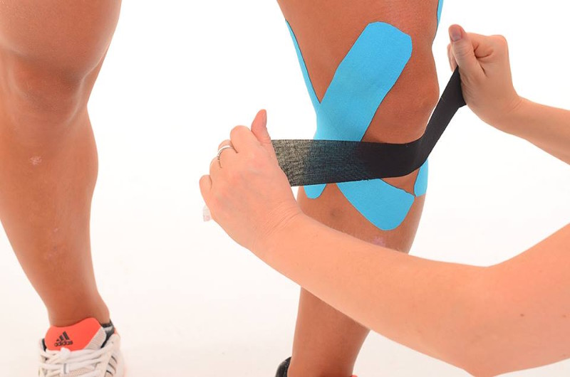
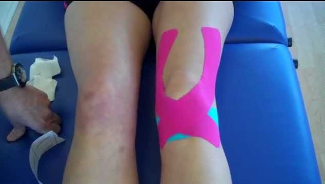

| Esések: | |
|---|---|
|
Az esések elkerűlhetetlenk a görkorcsolyában, mindenféleképpen ajánlom a bukó sisakot, kezdőknek mindenfajta védőt is. Érdemes hosszú nadrágot ás polót felvenni, ha esünk, akkor ne horzsoljuk szét magunkat. Ha kineziológiai tapasz van rajtunk miközben esünk és ugrálunk, akkor kissebb kár éri a térdünket. Egyszer így estem, és a térdem nem fájt utána, mint korábbi eséseknél. |
| Kizeziológiai tapasz tédre: | |
|---|---|
|  |  |
| A görkorcsolyázás ugyan szórakoztatónak és egyszerűnek tűnik, azonban kemény edzés is egyben. A profi szintű korcsolyázást célszerű már 4-5 évesen elkezdeni, de hobbiként bármikor megtanulhatjuk idősebb korban is. Teljesen átmozgatja a testet, fokozza az állóképességet és a koordinációs készséget és ugyan főként láb- és fenékizmainkra van jótékony hatással, azonban a karmunka által a felsőtestünket is edzi. A görkorcsolyázás különösen alkalmas zsírégetésre és ellentétben a futással, szinte alig terheli ízületeinket - persze csak akkor, ha itt is figyelünk a fokozatosságra, bemelegítésre és a gurulást követő nyújtásra, lazításra. |